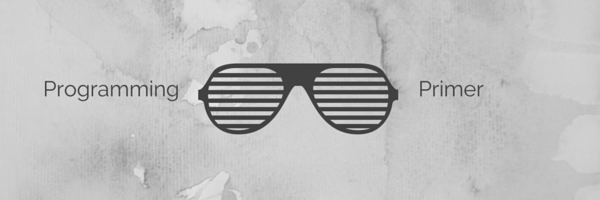

- © 2024 Birkbeck, University of London Contact Me (Keith Mannock) 0
The definitive information on the College and our programmes is on Birkbeck's main website.
This course is for candidates who have already been accepted on any of the programmes offered by CMS apart from the undergraduate foundation year (as it is inappropriate for that cohort). The course will act as a "jump-start" in your studies (if you weren't that comfortable with the notes or the admission test, this is probably an appropriate course to take).
The module is run in a "blended" style. The cohort reads materials before the class, and most of the face-to-face session is devoted to exercises, questions, and clarification of the materials. Apart from the first session, each session has homework that consolidates the materials covered and prepares the student for the following session.
A short introduction to computer science for candidates already accepted onto any of our programmes.
Module name: Programming Primer: A Short Introduction to Computer Science
Module code: BUCI057N0
Module-level: 7
Credit value: non-credit bearing module
To provide an introduction to the content of the Computer Systems, Fundamentals of Computing, and Programming modules from the MSc Computer Science and MSc Data Science programmes.
This "primer" course will act as a "jump-start" in your studies (if you weren't that comfortable with the notes or the admission test, then this is probably an appropriate course to take).
If you are an MSc IT student and wish to take modules from the CS or DS programmes as one of your optional modules, then you will need to pass the test that runs at the end of this course.
The module is run in a "blended" style where the cohort reads materials before the class. Then, most of the face-to-face sessions are devoted to exercises, questions, and clarification of the materials. Apart from the first session, each session has homework that consolidates the materials covered and prepares the student for the following session.
The programming section of the module uses the Python programming language.
Please be aware that this module requires an intensive study period and requires considerable effort outside the scheduled sessions.
By the end of this module, you will:
Materials associated with each of the sessions which comprise the module are shown in their respective sections. They are indicative of the content, and students should follow up on further materials. The (brief) notes from the various face-to-face sessions will also appear on this site, and these will be uploaded following each session. Homework for each session can be found under the appropriate session section.
The syllabus is provisional and is adapted dynamically to cope with the varying requirements of the student cohort.
Preparation in advance of each class is essential to effective participation. Module guides will specify the basic materials required for each class. Students are expected to spend several hours preparing for each class, reading and taking notes from the materials. Failure to prepare for and participate in class is a disservice to your study goals and discourtesy to your fellow students, which can cause considerable frustration.
This course has been developed to be as inclusive as possible. Materials have been designed to be as accessible as possible. Here are a few tips to get you started.
Should you require close captioning/subtitles, please click on the 'cc' icon on the bottom right of the video.